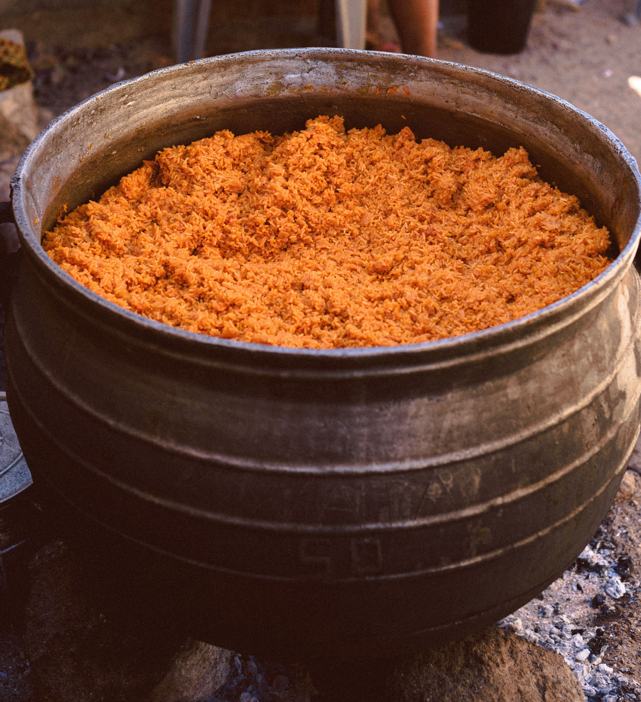
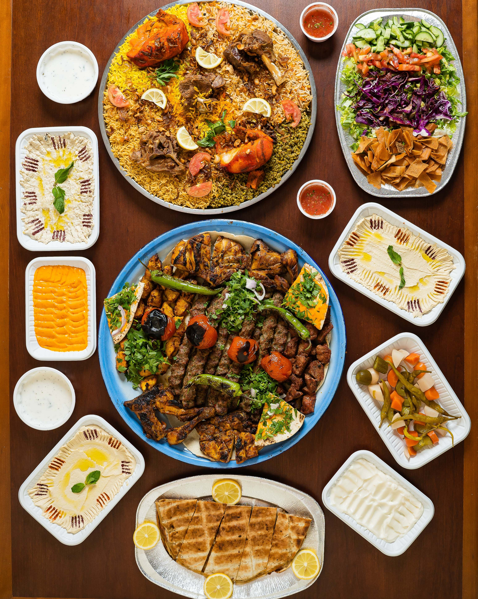
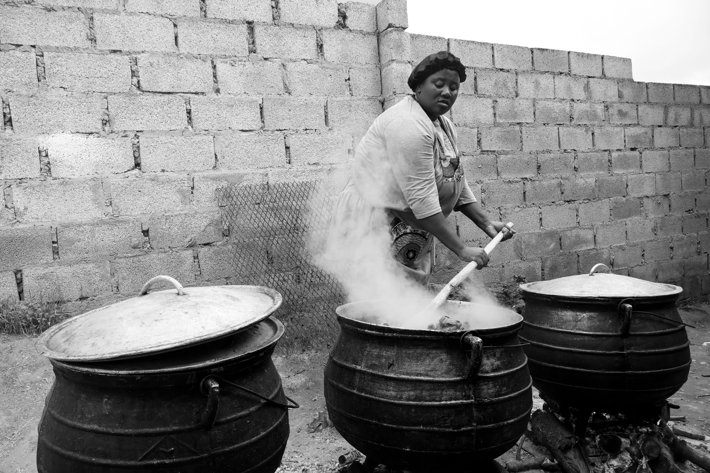
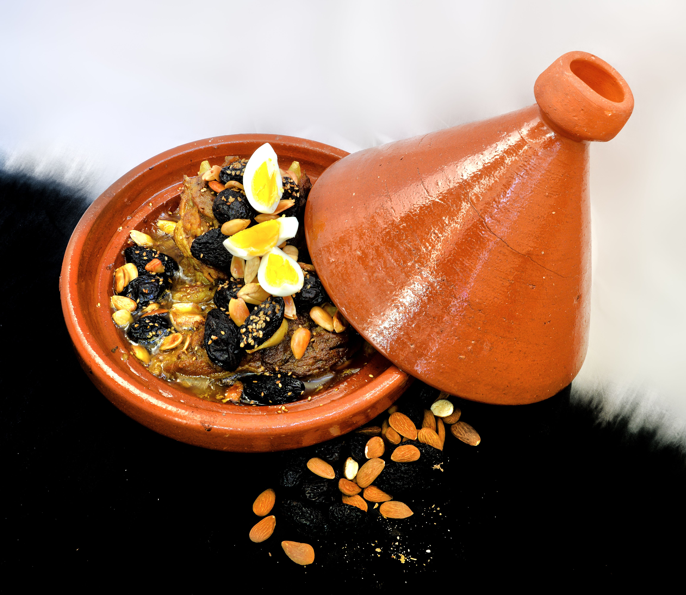
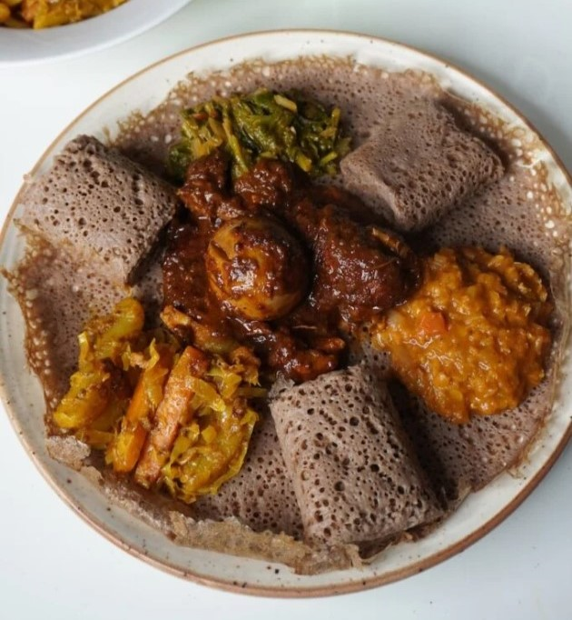
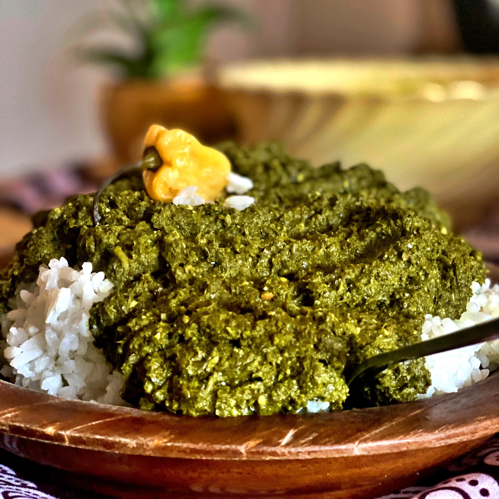
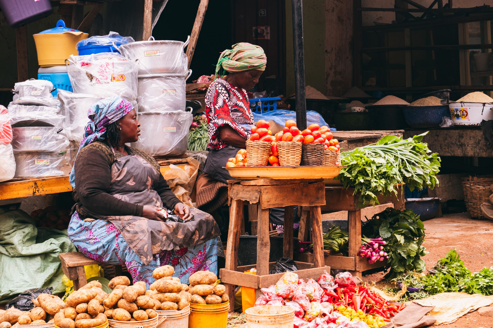
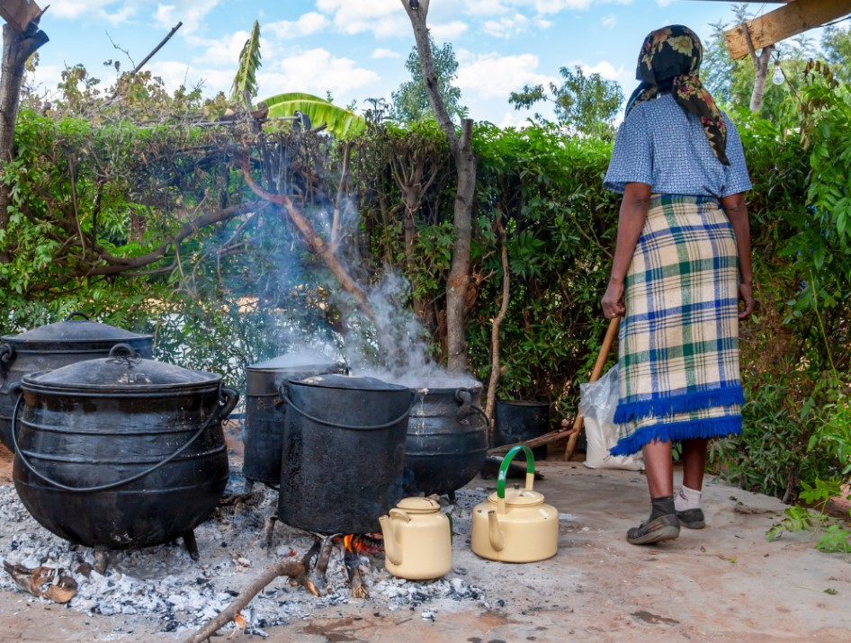

Jollof Rice
A beloved West African classic, celebrated for its rich tomato base, aromatic spices and vibrant color.
Discover the Recipe →
From the vibrant markets of West Africa to the aromatic kitchens of the East, discover the flavors, traditions and stories that bring our continent together.

African cuisine is a beautiful reflection of the continent's diverse cultures, landscapes, histories and communities.
Our food tells stories of family, celebration, creativity and connection. From ancient cooking traditions to modern culinary innovations, every recipe carries a piece of our identity.
At Tastes of Africa, we bring these stories together to celebrate the richness of our culinary heritage.
Discover Our Story →Meet some of the iconic dishes that make African cuisine unforgettable.

A beloved West African classic, celebrated for its rich tomato base, aromatic spices and vibrant color.
Discover the Recipe →
A slow-cooked delicacy combining fragrant spices, tender ingredients and centuries of culinary tradition.
Discover the Recipe →
A distinctive fermented flatbread made from teff flour, central to Ethiopian food culture.
Discover the Recipe →
A cherished Rwandan dish made with cassava leaves, groundnuts and a rich blend of local ingredients.
Discover the Recipe →Three regions. Countless traditions. One extraordinary culinary continent.
Across Africa, food is more than nourishment. It is an expression of hospitality, identity, community and belonging.
From communal meals to traditional ceremonies, our culinary practices preserve generations of knowledge and bring people together.
Explore Our Heritage →Discover the traditions and stories behind African food culture.
Explore the people, ingredients and traditions shaping African cuisine.

Discover how local ingredients, traditional farming and regional knowledge shape African cuisine.
Read More →
Meet the culinary traditions and cooking techniques passed down through generations.
Read More →
Discover how African chefs and restaurants are introducing local flavors to new audiences.
Read More →